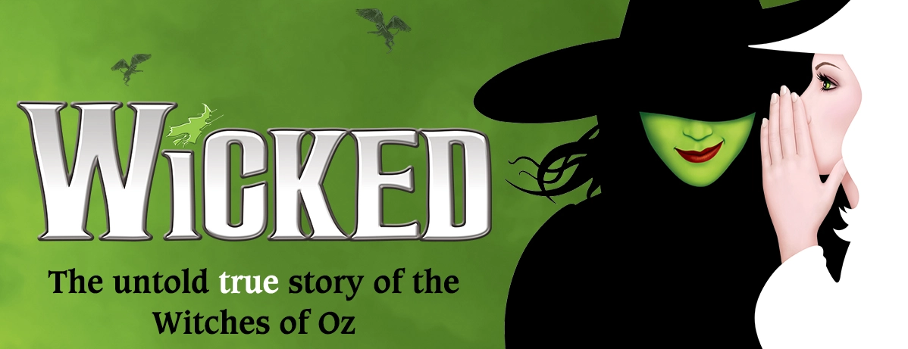
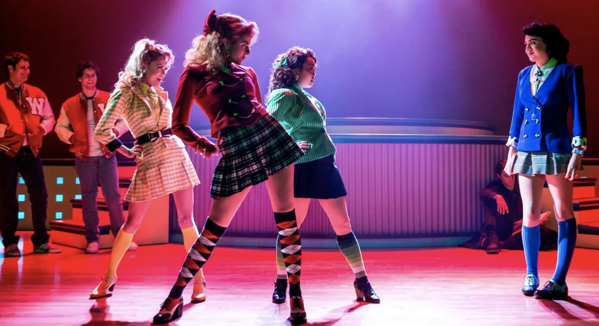
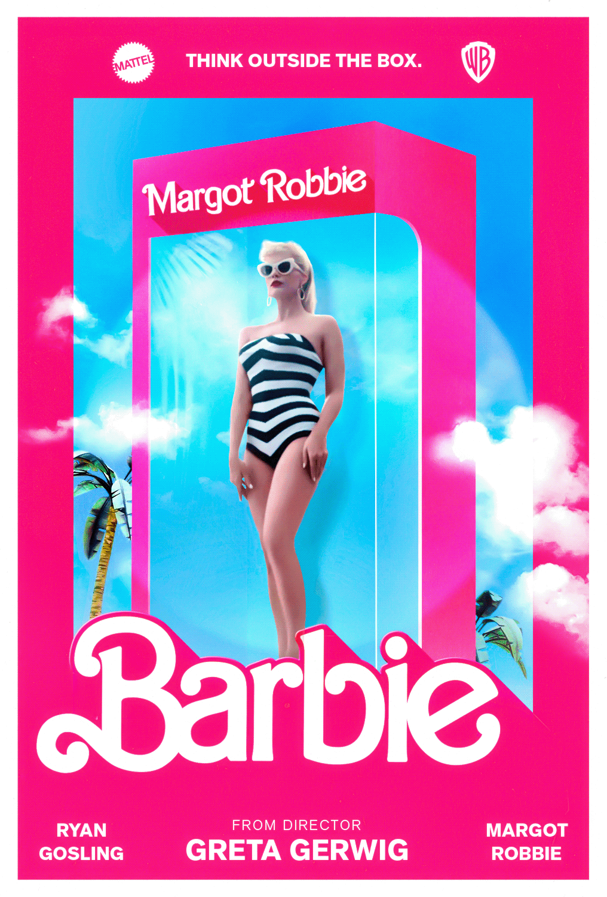

Wicked is my top favorite because it tells a story of The Wizard of Oz from the villain's point of view through fantastic music
and incredible set pieces, while also telling a story about a complex relationship between two female leads that may or may be in love with each other.

Heathers the Musical is also my top favorite because the songs are catchy, great for a person's first musical,
and the costume design looks amazing and it captures the spirit of the original film while being original.

The Spongebob Musical is my top favorite Musical I picked due to how it manages to adapt a cartoon into Broadway.
And how it manages to captures the hearts of millions without feeling like a cheap cash grab despite it looking that way.

I chosen Mean Girls Musical for my top 5 favorite Musical for its LGBT themes, and the marvelous songs.
And how it captures the first movie's spirit, while not changing the core of it that much.

I picked Frozen the musical as one of my top 5 favorite Broadway Musical because of how it fixed plot holes that hurts the overall story,
and how it manages to captures the spirit and heart of the original film even with the changes it made to make the story connect with the second film.

Kpop Demon Hunters is my top favorite I want to see being adapted into a Broadway Musical,
because of its soundtrack and story that can work in a Broadway Stage
and how it could become the second Kpop Broadway musical in history.

I picked Scott Pilgrim as one of my top 5 favorite franchise I want to see being adapted into Broadway,
because the movie was already like a rock musical only with action set pieces instead of singing,
and with the franchise being theme around music, it has the potential to become a musical with the right budget.

I chose Nightmare before Christmas for one of my top 5 favorite franchises,
because I was surprised Disney hasn't adapted it into a musical yet,
especially since the film has some untapped potential about musical set pieces.

I picked Barbie for my top 5 favorite Franchise that needs to be adapted to Broadway,
because it could potentially explore the themes of gender roles and identity in a way that resonate with audiences.

I chose The Scream movie as one of my top 5 favorites that I want to see adapted into a musical,
because of how much comedy potential it has with translating a horror film into the Broadway Stage.